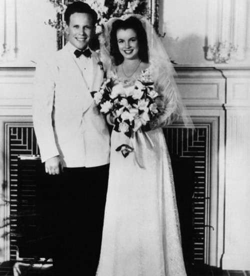
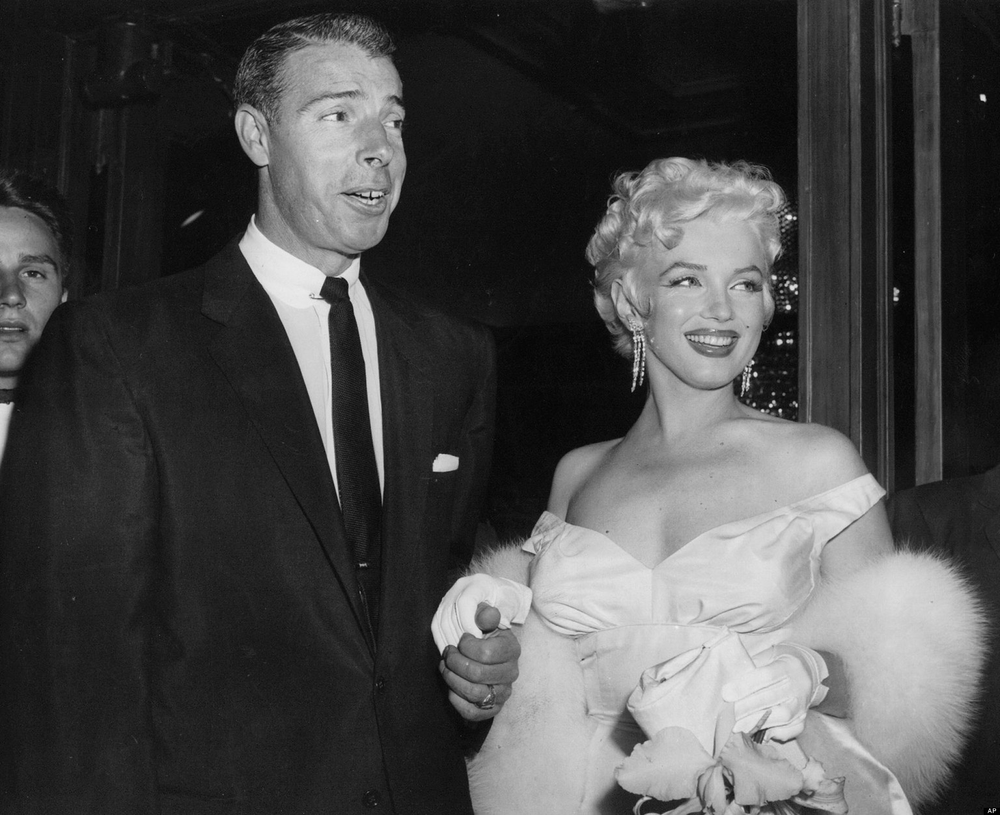
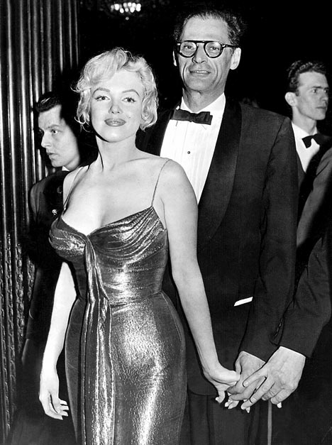
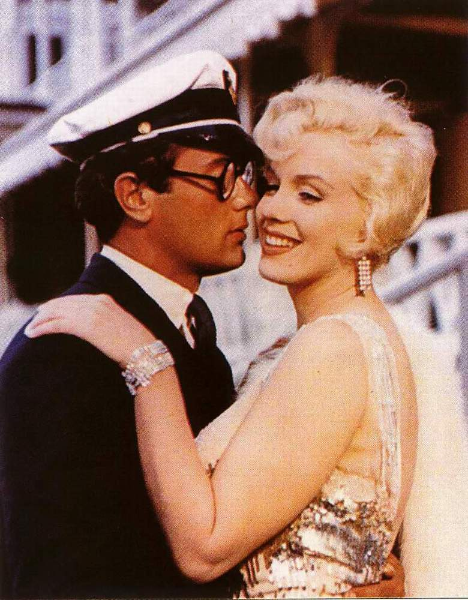
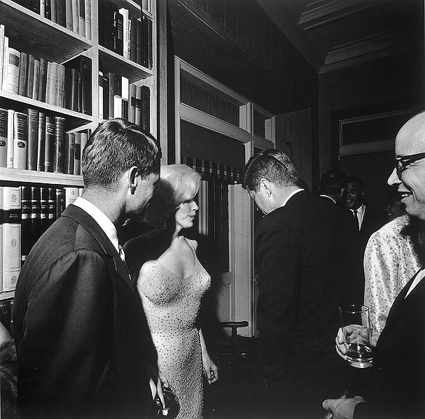

Nombre verdadero Norma Jean Mortenson,nacio en 1 de junio de 1926 en los angeles. su primera infancia fue muy dura. Su madre la dejó en manos de un matrimonio amigo hasta que cumplió siete años; entonces se la llevó a vivir consigo.
Nada hacia pensar que Norma tuviera una futura carrera como actriz
Fallecimiento
El 5 de agosto de 1962, la actriz estadounidense Marilyn Monroe, el gran mito erótico de los años cincuenta, fue hallada muerta en su casa de Hollywood. Aunque el forense dictaminó que la actriz se había suicidado con una sobredosis de somníferos, las causas de su muerte permanecen aún confusas; se apreciaron algunas contradicciones en el informe médico de su trágico fin. Las dificultades profesionales y su agitada vida sentimental parecieron estar en el origen de su muerte. En cualquier caso, la jovialidad y el vivir desenfrenado y despreocupado que muchas veces había representado en el cine y fuera de él se corresponden poco con el verdadero perfil de su vida, marcada por las contradicciones y los complejos de una niñez y una juventud desgraciadas, seguidas después de un éxito arrollador al que no supo hacer frente, ni siquiera cuando creyó encontrar, junto a personalidades como Arthur Miller, la estabilidad y la seguridad que persiguió durante toda su vida.
Amores de Monroe
Con su primer esposo, James Dougherty, se casó apenas semanas después de haber cumplido 16 años. El matrimonio duró cuatro años y terminó en 1946.

Con el beisbolista Joe Dimaggio se casó en 1954 y se separó 274 días después.

El tercer esposo de la Monroe (1956-1961) fue el escritor ganador del premio Pulitzer, Arthur Miller.Autor de La muerte de un viajante, Miller era también una celebridad.

Con el actor Tony Curtis tuvo un romance de diez años que incluyó un aborto involuntario.Monroe conoció a Marlon Brando antes de que los dos fueran famosos y tuvieron a escondidas una relación intermitente durante años.

Los romances más sonados los tuvo con los hermanos Kennedy, John y Robert. Acá una de las pocas fotos de los tres juntos, en el cumpleaños del entonces presidente en 1962.
